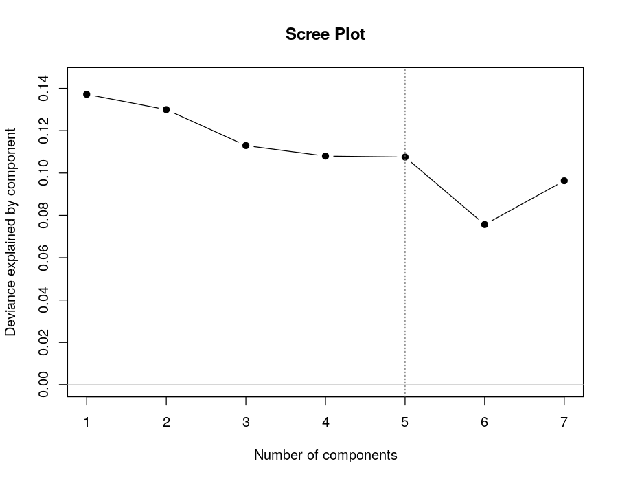
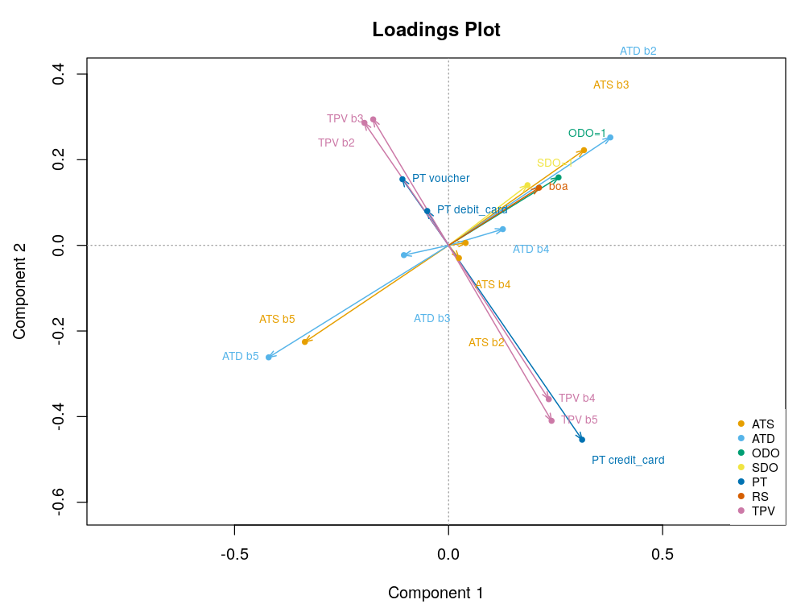
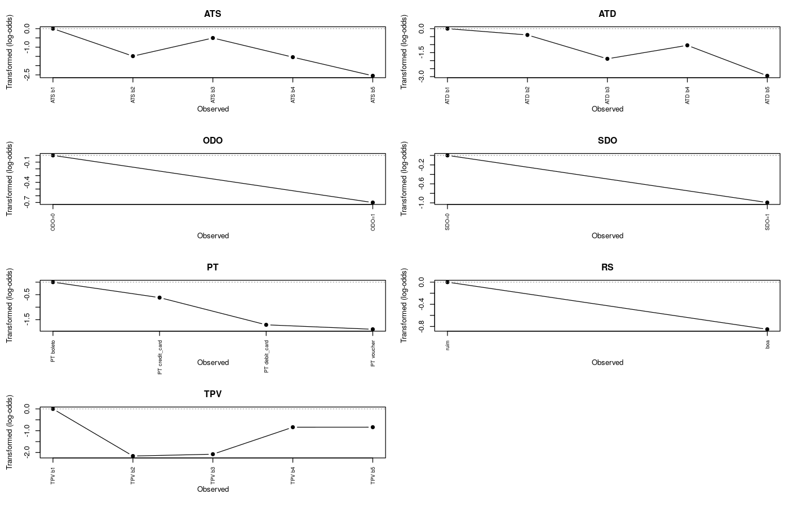
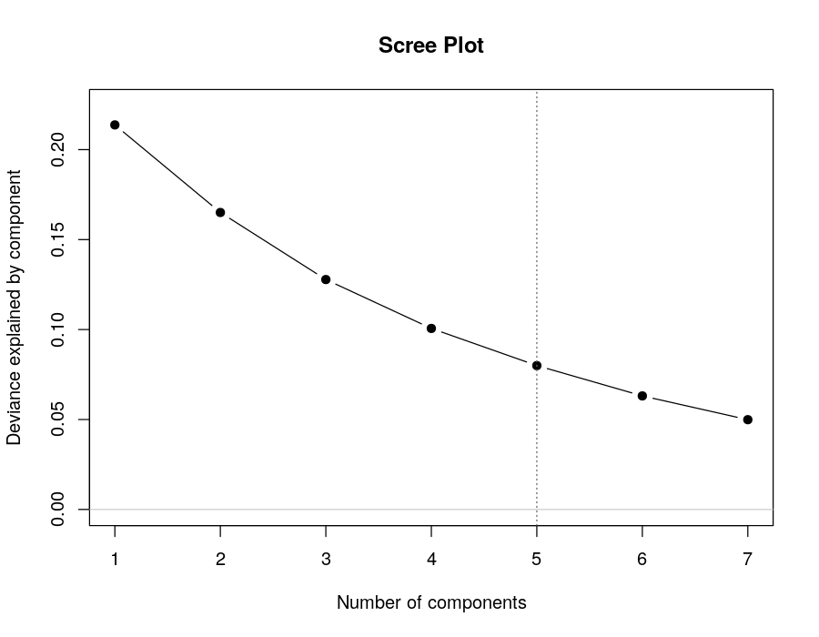
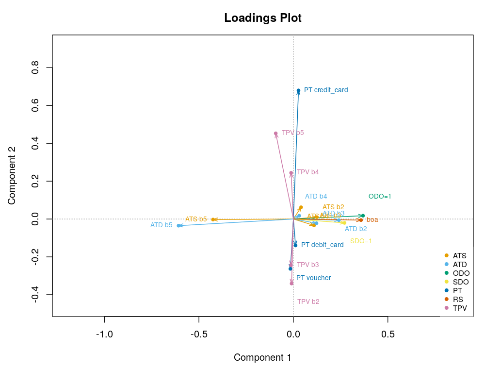
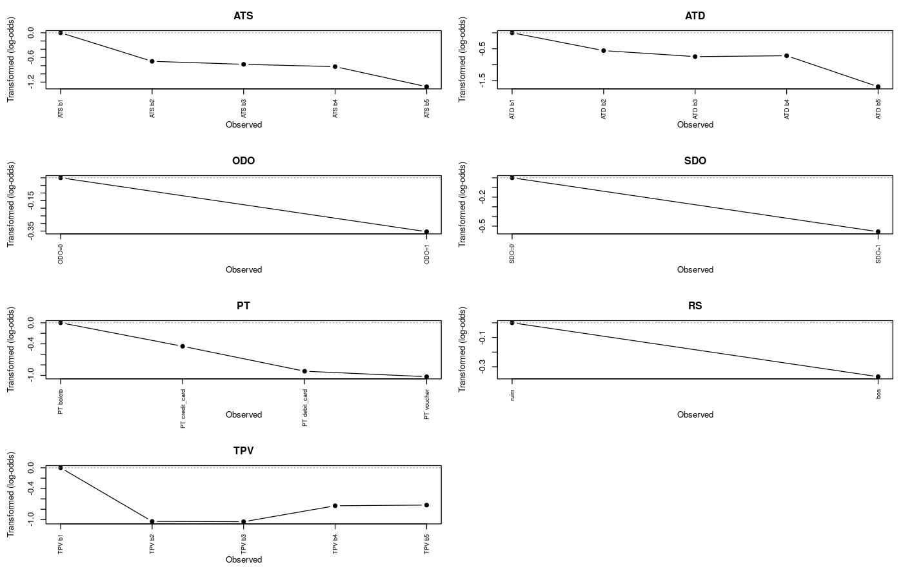

Este relatório documenta a aplicação da ACP Logística ao mesmo conjunto de
dados da ACPNL do TCC (5.762 pedidos, mesmos filtros e binning OneR de
scripts/get_data.r). O objetivo é cobrir o gap apontado no resumo do
trabalho, que menciona a ACP Logística (Capítulo 4) mas reporta apenas a análise
ACPNL (Capítulo 5.3). Foram rodadas duas estimativas com 5 componentes: o algoritmo
de Majoração-Minimização (MM) e o de Relaxamento convexo, ambos de
Landgraf e Lee (2015), via R package logisticPCA 0.2 (Landgraf).
De-para entre os nomes originais da base Olist (dados/olist.csv) e os nomes usados nas análises ACPNL e ACP Logística:
| Nome original | Nome usado | Descrição |
|---|---|---|
| actual_time_to_shipping | ATS | Tempo real de postagem/envio (dias) |
| actual_time_to_deliver | ATD | Tempo real de entrega (dias) |
| order_delivered_onschedule | ODO | Entrega no prazo (0/1) |
| shipping_delivered_onschedule | SDO | Postagem no prazo (0/1) |
| payment_type | PT | Tipo de pagamento (boleto, credit_card, debit_card, voucher) |
| review_score | RS | Avaliação da compra (1 a 5) |
| total_payment_value | TPV | Valor total do pagamento (R$) |
A ACP Logística modela dados binários (Bernoulli). As 7 variáveis da ACPNL
foram recodificadas em 18 colunas binárias. As variáveis métricas mantêm o binning
OneR já usado na ACPNL (uma dummy por faixa, com a primeira faixa como
referência); review_score foi binarizada em boa
(nota > 3, i.e. 4 ou 5) e ruim (1 a 3); payment_type entrou como
dummies por tipo (referência: boleto); ODO e SDO já eram 0/1 (referência: 0).
O modelo inclui efeitos principais (main_effects = TRUE), que jogam o papel
do intercepto — por isso cada variável precisa de uma categoria de referência sem dummy.
| Coluna | Variável | Categoria observada | Papel |
|---|---|---|---|
| — | ATS | (-0.0371,0.733] | referência |
| ATS_2 | ATS | (0.733,1.18] | dummy |
| ATS_3 | ATS | (1.18,2] | dummy |
| ATS_4 | ATS | (2,3.42] | dummy |
| ATS_5 | ATS | (3.42,40] | dummy |
| — | ATD | (0.908,5.5] | referência |
| ATD_2 | ATD | (5.5,8.17] | dummy |
| ATD_3 | ATD | (8.17,11.2] | dummy |
| ATD_4 | ATD | (11.2,16.3] | dummy |
| ATD_5 | ATD | (16.3,108] | dummy |
| — | ODO | 0 | referência |
| ODO_2 | ODO | 1 | dummy |
| — | SDO | 0 | referência |
| SDO_2 | SDO | 1 | dummy |
| — | PT | boleto | referência |
| PT_2 | PT | credit_card | dummy |
| PT_3 | PT | debit_card | dummy |
| PT_4 | PT | voucher | dummy |
| — | RS | ruim | referência |
| RS_boa | RS | boa | dummy |
| — | TPV | (-17.8,61.3] | referência |
| TPV_2 | TPV | (61.3,114] | dummy |
| TPV_3 | TPV | (114,243] | dummy |
| TPV_4 | TPV | (243,606] | dummy |
| TPV_5 | TPV | (606,3.01e+04] | dummy |
MM (Majoração-Minimização): minimiza o desvio de Bernoulli com a restrição
de ortonormalidade plena; garante mínimo local. Parâmetro de penalidade m = 4
(padrão), critério de parada 1e-5, no máximo 5.000 iterações, início determinístico.
Relaxamento convexo: relaxa o domínio não-convexo para a Fantope (projeto
positivo-semidefinido de traço k), com mínimo global garantido na versão relaxada;
critério 1e-6. Em ambos, a estimativa é determinística (sem início aleatório), e o
scree foi construído com fits independentes de k = 1 a 7, análogo à Figura 14 do TCC.
| Componentes | Desvio explicado (MM) | Desvio explicado (convexo) |
|---|---|---|
| k = 1 | 0.137 | 0.214 |
| k = 2 | 0.267 | 0.379 |
| k = 3 | 0.380 | 0.507 |
| k = 4 | 0.488 | 0.607 |
| k = 5 | 0.596 | 0.687 |
| k = 6 | 0.671 | 0.750 |
| k = 7 | 0.768 | 0.800 |
Observações: (i) não há ombro acentuado — o ganho por componente fica entre 0,11 e 0,14 até k = 5 e cai para ~0,08 depois, o que sustenta a escolha de 5 componentes (paridade com a ACPNL) sem que a estrutura deixe de ser explorada; (ii) o convexo explica mais desvio em todo k (0,687 vs 0,596 em k = 5) — esperado, pois ele resolve uma versão relaxada do problema (a medida usa a matriz relaxada H completa; MM é estritamente rank-5). A comparação justa entre os dois é pela direção das soluções (loadings), não pelo desvio explicado.
acpl_fit_5d_mm.r)Convergência em 48 iterações; desvio explicado (k = 5) = 0,5956.

| Variável | Comp. 1 | Comp. 2 |
|---|---|---|
| ATS b2 | 0.0241 | -0.0296 |
| ATS b3 | 0.316 | 0.222 |
| ATS b4 | 0.0398 | 0.00563 |
| ATS b5 | -0.336 | -0.226 |
| ATD b2 | 0.378 | 0.252 |
| ATD b3 | -0.104 | -0.0228 |
| ATD b4 | 0.127 | 0.0378 |
| ATD b5 | -0.420 | -0.262 |
| ODO=1 | 0.257 | 0.159 |
| SDO=1 | 0.184 | 0.141 |
| PT credit_card | 0.312 | -0.454 |
| PT debit_card | -0.0499 | 0.0803 |
| PT voucher | -0.108 | 0.154 |
| boa | 0.211 | 0.135 |
| TPV b2 | -0.197 | 0.286 |
| TPV b3 | -0.176 | 0.294 |
| TPV b4 | 0.234 | -0.359 |
| TPV b5 | 0.241 | -0.410 |
Componente 1 — qualidade da entrega. Polos bem definidos: no lado positivo, cartão de crédito (+0,312), pedido entregue no prazo (+0,257), postagem no prazo (+0,184) e review boa (+0,211) e ticket alto (TPV b4/b5, +0,23/+0,24); no lado negativo, as faixas longas de prazo — ATD b5 (−0,420) e ATS b5 (−0,336) — e os tickets baixos (TPV b2/b3, −0,20/−0,18). A leitura é a mesma história da ACPNL: prazos curtos e cumpridos andam com satisfação (boa) e tickets maiores; prazos longos andam com review ruim (categoria de referência) e tickets baixos.
Componente 2 — poder de compra / meio de pagamento. Separa ticket alto + cartão de crédito (TPV b4 +0,359, TPV b5 +0,410, credit_card +0,454) de ticket baixo (TPV b2 −0,286, TPV b3 −0,294) e voucher (−0,154). É um eixo de valor do pedido, não de logística — estrutura que a ACPNL não isola, porque lá o TPV foi tratado como ordinal monotônico e o PT como nominal.

O análogo do gráfico de transformação da ACPNL: para cada categoria, o log-odds médio do seu próprio dummy relativo à referência (0 por construção). Leitura relativa dentro de cada variável:
| Categoria | Variável | Log-odds (ref. = 0) |
|---|---|---|
| ATS b1 | ATS | 0.000 |
| ATS b2 | ATS | -1.486 |
| ATS b3 | ATS | -0.505 |
| ATS b4 | ATS | -1.542 |
| ATS b5 | ATS | -2.549 |
| ATD b1 | ATD | 0.000 |
| ATD b2 | ATD | -0.394 |
| ATD b3 | ATD | -1.886 |
| ATD b4 | ATD | -1.043 |
| ATD b5 | ATD | -2.948 |
| ODO=0 | ODO | 0.000 |
| ODO=1 | ODO | -0.701 |
| SDO=0 | SDO | 0.000 |
| SDO=1 | SDO | -0.993 |
| PT boleto | PT | 0.000 |
| PT credit_card | PT | -0.618 |
| PT debit_card | PT | -1.705 |
| PT voucher | PT | -1.884 |
| ruim | RS | 0.000 |
| boa | RS | -0.851 |
| TPV b1 | TPV | 0.000 |
| TPV b2 | TPV | -2.161 |
| TPV b3 | TPV | -2.077 |
| TPV b4 | TPV | -0.839 |
| TPV b5 | TPV | -0.838 |

acpl_fit_5d_convex.r)Convergência em 27 iterações; desvio explicado = 0,6872 (medido na solução relaxada; ver ressalva da Seção 3).

| Variável | Comp. 1 | Comp. 2 |
|---|---|---|
| ATS b2 | 0.124 | 0.00987 |
| ATS b3 | 0.109 | -0.0338 |
| ATS b4 | 0.0407 | 0.062 |
| ATS b5 | -0.425 | -0.0029 |
| ATD b2 | 0.241 | -0.00619 |
| ATD b3 | 0.122 | -0.0223 |
| ATD b4 | 0.0308 | 0.0174 |
| ATD b5 | -0.608 | -0.0352 |
| ODO=1 | 0.368 | 0.0176 |
| SDO=1 | 0.271 | -0.0206 |
| PT credit_card | 0.0271 | 0.680 |
| PT debit_card | 0.0114 | -0.140 |
| PT voucher | -0.0159 | -0.263 |
| boa | 0.358 | -0.00577 |
| TPV b2 | -0.00948 | -0.341 |
| TPV b3 | -0.0128 | -0.244 |
| TPV b4 | -0.0121 | 0.244 |
| TPV b5 | -0.0933 | 0.453 |
Componente 1 — mesma história da qualidade da entrega, mais limpa. ATD b5 (−0,608) e ATS b5 (−0,425) dominam o polo negativo; ODO = 1 (+0,368), SDO = 1 (+0,271), review boa (+0,358) e ATD b2 (+0,241) o positivo. O eixo reproduz o Componente 1 da MM com cargas mais concentradas (consequência da projeção no Fantope).
Componente 2 — meio de pagamento e ticket. Aqui o convexo separa o eixo de forma mais nítida que a MM: credit_card (+0,680) quase sozinho no polo positivo, com TPV b5 (+0,453) e TPV b4 (+0,244); voucher (−0,263), debit_card (−0,140) e TPV b2 (−0,341) / TPV b3 (−0,244) no negativo. Confirma a leitura da MM: existe uma dimensão latente de valor do pedido associada ao meio de pagamento.

| Categoria | Variável | Log-odds (ref. = 0) |
|---|---|---|
| ATS b1 | ATS | 0.000 |
| ATS b2 | ATS | -0.694 |
| ATS b3 | ATS | -0.767 |
| ATS b4 | ATS | -0.824 |
| ATS b5 | ATS | -1.312 |
| ATD b1 | ATD | 0.000 |
| ATD b2 | ATD | -0.559 |
| ATD b3 | ATD | -0.747 |
| ATD b4 | ATD | -0.719 |
| ATD b5 | ATD | -1.689 |
| ODO=0 | ODO | 0.000 |
| ODO=1 | ODO | -0.354 |
| SDO=0 | SDO | 0.000 |
| SDO=1 | SDO | -0.558 |
| PT boleto | PT | 0.000 |
| PT credit_card | PT | -0.447 |
| PT debit_card | PT | -0.921 |
| PT voucher | PT | -1.025 |
| ruim | RS | 0.000 |
| boa | RS | -0.368 |
| TPV b1 | TPV | 0.000 |
| TPV b2 | TPV | -1.035 |
| TPV b3 | TPV | -1.040 |
| TPV b4 | TPV | -0.733 |
| TPV b5 | TPV | -0.720 |

Reprodutibilidade: ambiente R 4.0.5 + logisticPCA 0.2
(libs/Rlib_r40), fits determinísticos. Comandos:
.\rrun.ps1 scripts\acpl_fit_5d_mm.r,
.\rrun.ps1 scripts\acpl_fit_5d_convex.r,
.\rrun.ps1 scripts\acpl_relatorio.r.
Artefatos: fits/acpl_fit_5d_{mm,convex}.rds,
resultados/plots/acpl_fig_{mm5d,cvx5d}_*.png.